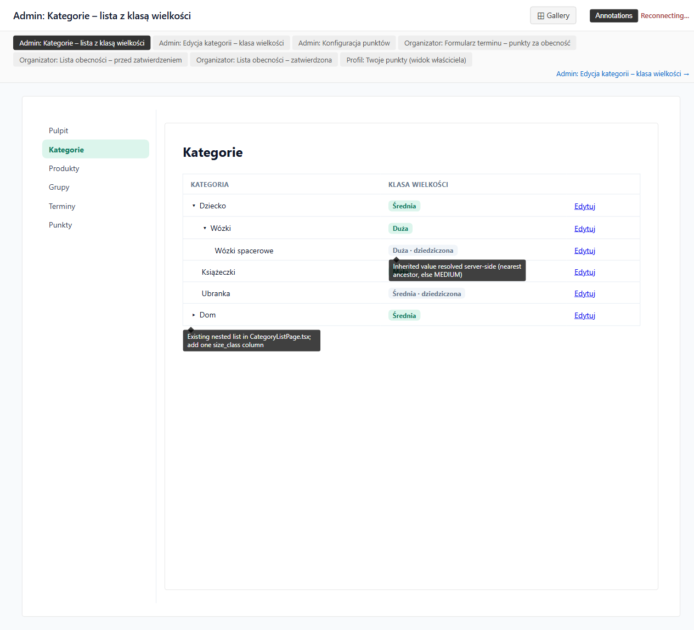
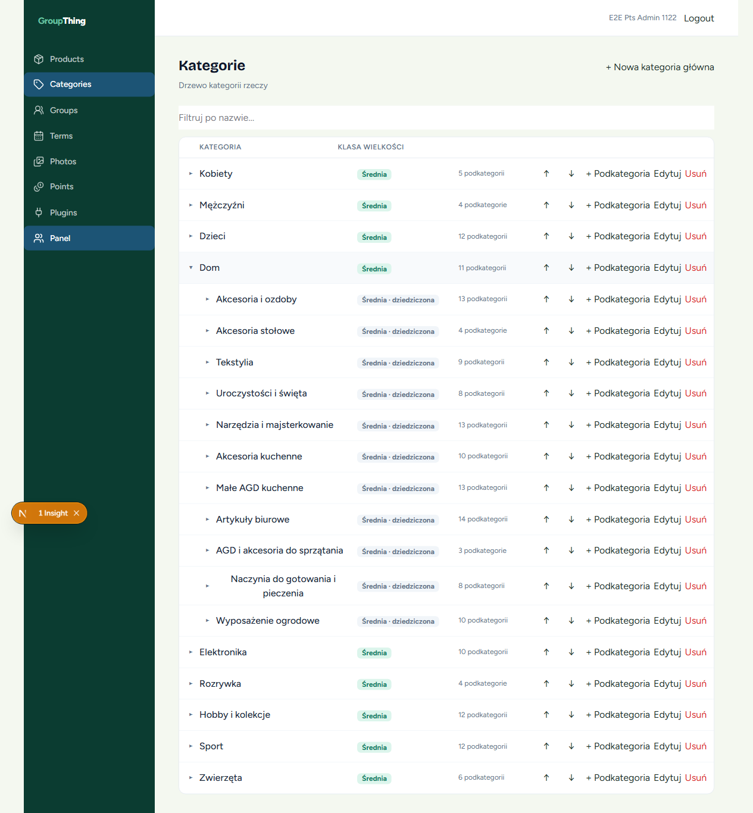
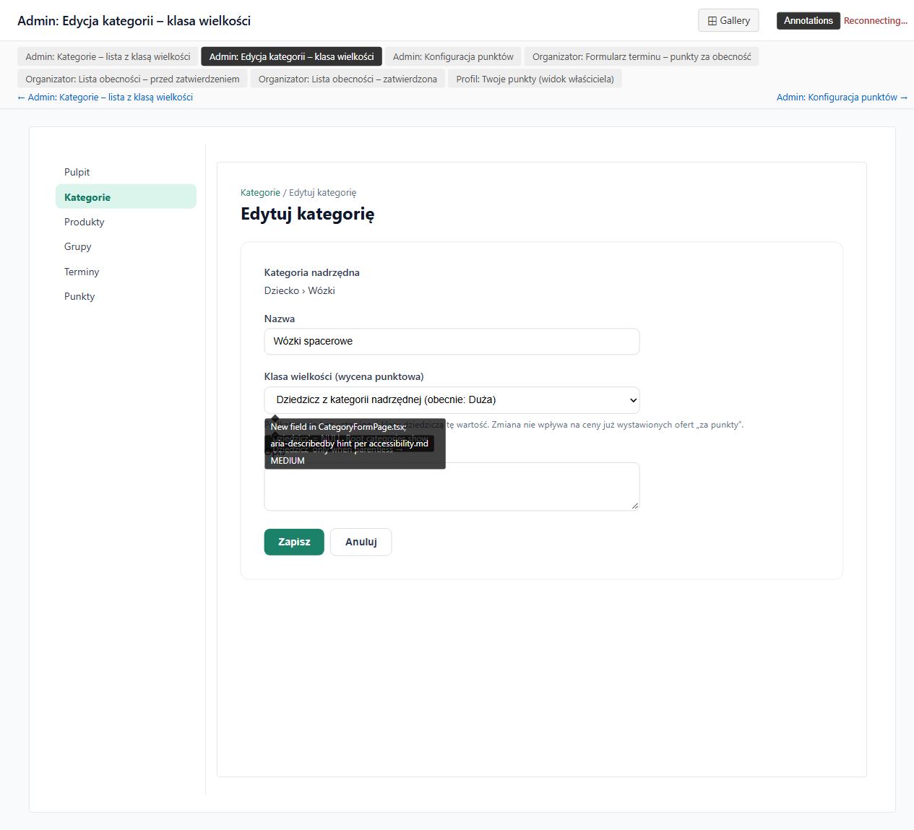
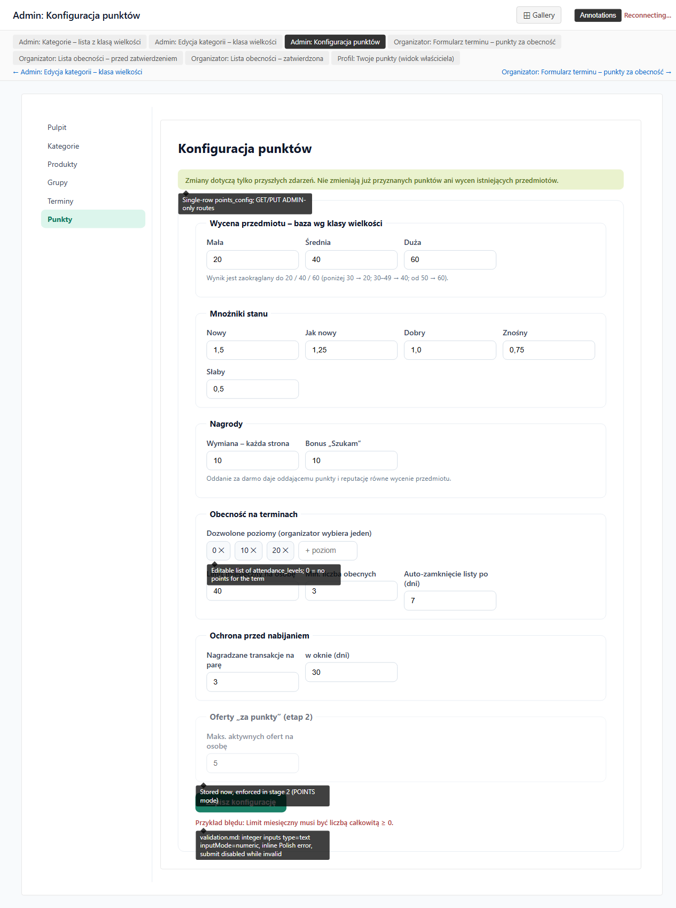
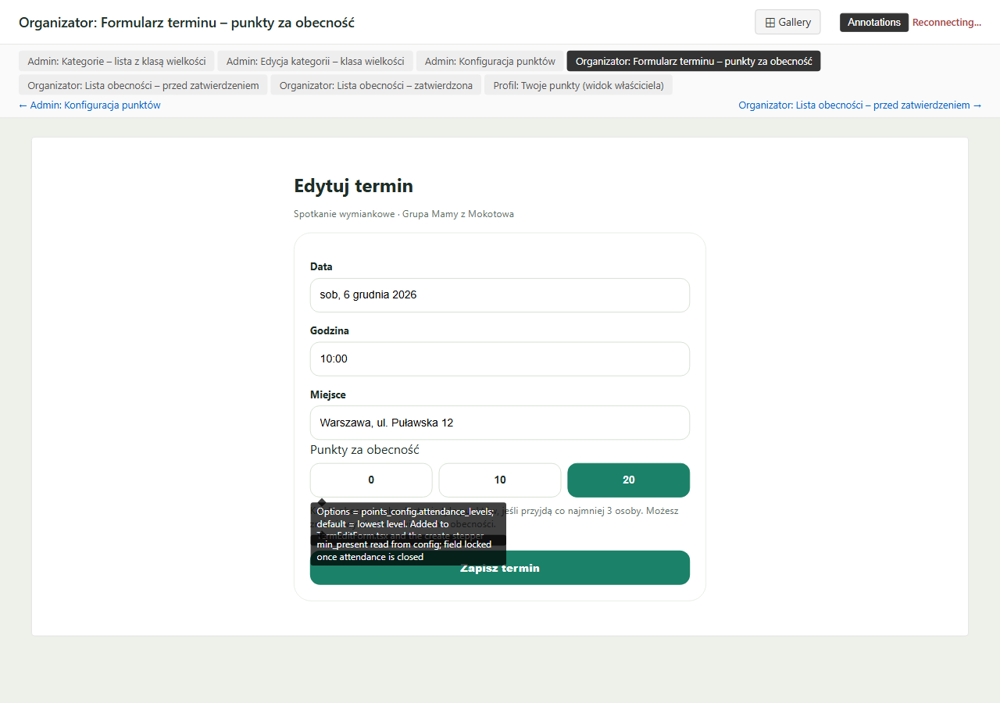
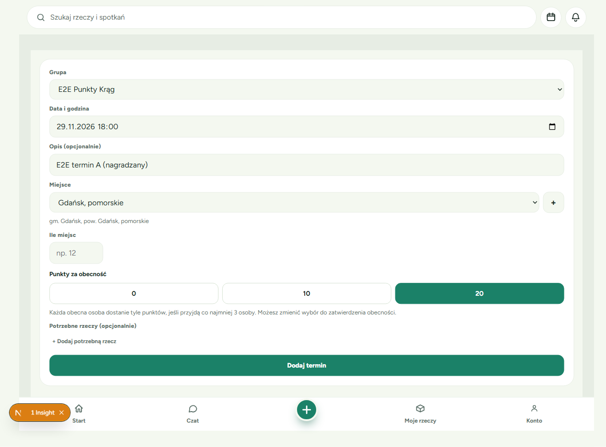
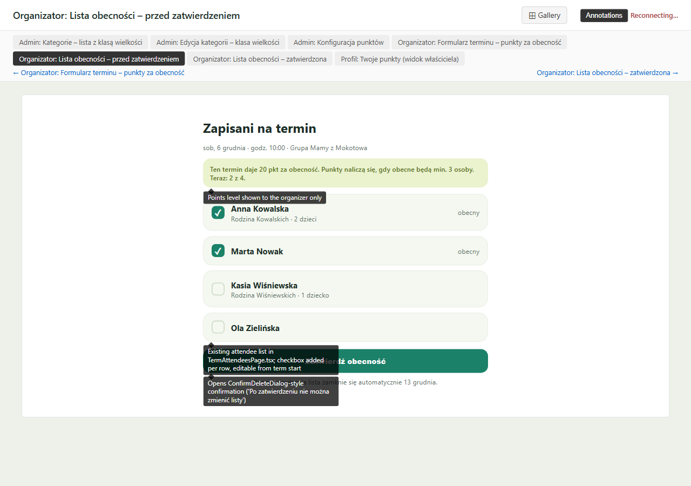
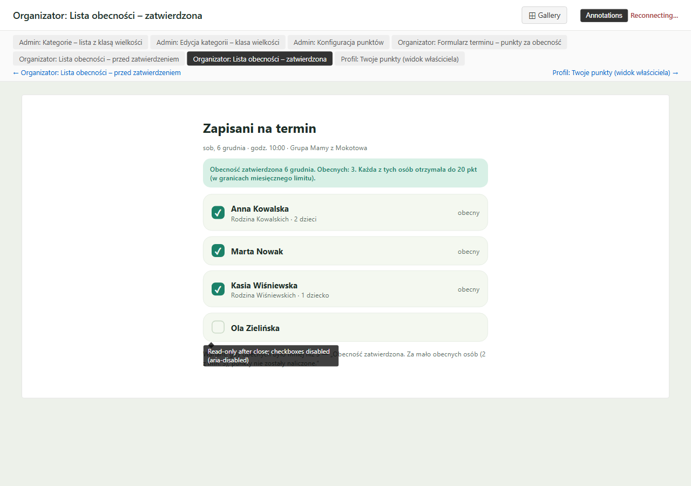
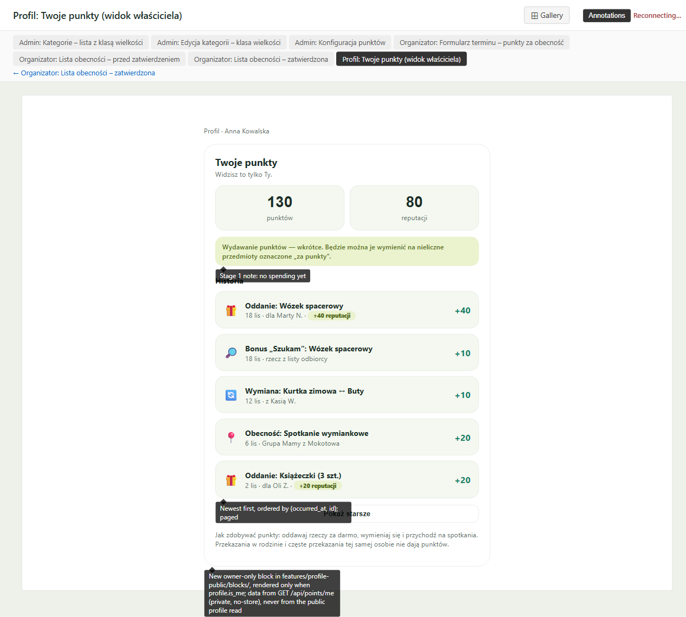

Per-screen comparison
screen:admin-category-list ✓ Match


Columns „KATEGORIA” and „KLASA WIELKOŚCI”, nested disclosure rows, set vs „· dziedziczona” pills. The existing extra controls (↑/↓, + Podkategoria, Usuń) are kept.
screen:admin-category-edit ⚠ Minor deviation


Same fields and order. The help text ends „…ceny już wystawionych rzeczy.”, where the mockup says „…ofert „za punkty””. Inputs and buttons are unstyled (pre-existing admin styling).
screen:admin-points-config ⚠ Minor deviation


Six fieldsets in mockup order, the level chips, and the inline Polish errors (see 04) all match. Inputs are borderless and the save button is not filled (admin-wide). 1.0 is shown as „1”.
screen:term-form-points-level ✓ Match


The three-button segmented picker, with the selected level filled green, and the help text with the minimum present. Implemented in both the add and edit forms.
screen:attendees-open ✓ Match


Info banner with „Teraz: X z Y”, checkbox rows with „obecny”, „Zatwierdź obecność” and the auto-close line. Extra: the organizer label (spec W6). In this full-page capture the sticky header overlaps the banner.
screen:attendees-closed ✓ Match


Read-only rows, and both result variants with the mockup's copy.
screen:profile-points ⚠ Minor deviation


Tiles, the „wkrótce” note, history rows with icon, the reputation pill and amount, and the footer all match. The page is a full-width /account/points (spec remap). History titles and subtitles follow the spec table. „Pokaż starsze” is not visible because there are fewer than one page of entries.